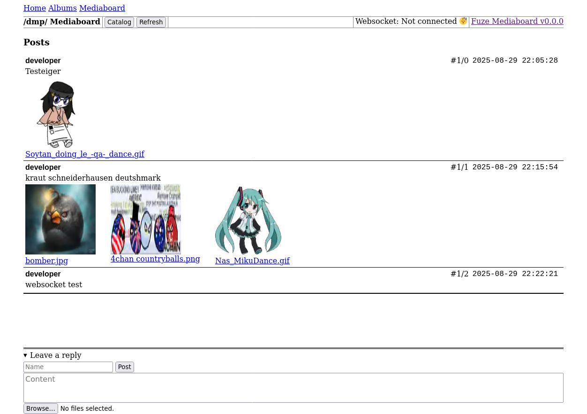

Fuze Mediaboard
Github page.
"muh I hate Microsoft or something"
Fuze.page might start a self-hosted Git instance in the future. Gitea seems like a good option.

This software is based on what is commonly referred to as an "imageboard" or "messageboard". Users can upload audio, images, or video. I felt that the word "imageboard" is misleading and outdated because it implies that only images can be shared, hence the term "mediaboard".
Another reason I call it a mediaboard is to mark the next generation of messageboards.
Back in the wild west days of the internet...
...when imageboards first came around, they were impressive because users could not commonly share images for free at the time. Now however, imageboards such as 4chan that were once on the bleeding edge are now seen as archaic, and for good reason. Almost all other major platforms including YouTube and Soundcloud have utilised new technologies, moving from MPAs to SPAs.
Not all of the changes in the web have been good.
Many SPAs are actually slower for most users than the earlier MPAs were. As pointed out in Tonsky's blog, Many modern websites have become extremely bloated, packing in several megabytes of Javascript even for a simple landing page. Бог знает what it's all used for.
Fuze Mediaboard combines the best of the old and the new.
A SPA can improve the user experience when implemented correctly. For example, if you were to fill out a form on an MPA (such as writing a message) and made an action (such as deleting a previous message), the page would reload twice, wiping out anything you might have been doing on that page. By contrast, if you delete a message on a SPA you not only keep form content but also your scroll position. At the time of writing, the front-end for Fuze Mediaboard is contained entirely within one HTML file, weighing in at less than 20 kilobytes (although message deleting hasn't been implemented yet).